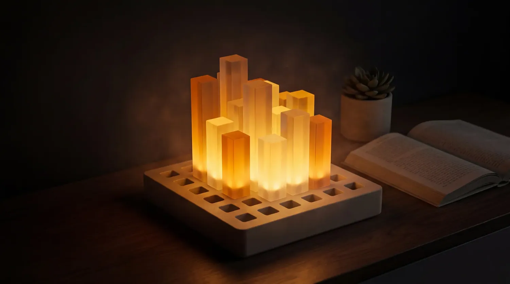
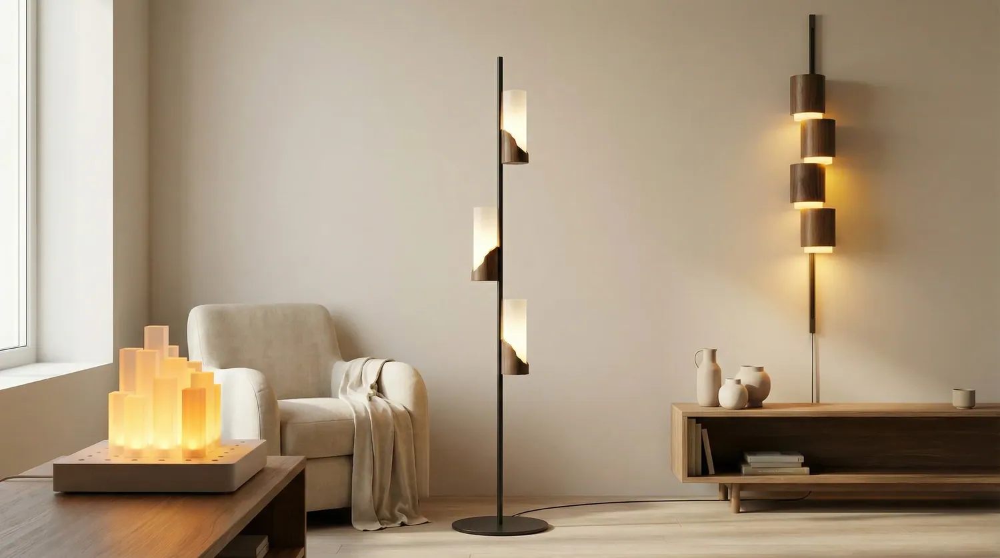

PROJECT FILE / 01 / 产品设计
《心景》疗愈灯具
基于独居青年情绪疗愈场景的灯具设计
把「不可见的情绪需求」，做成可插拔、可堆叠、能回应的光。

01 可实现功能
功能描述以现有设计资料为准；作品集内所有项目所述功能均可实现。
- 01进门即亮
人体感应自动开灯，减少回到住处时摸黑找开关的短暂黑暗与冷清感。
- 02睡前渐暗
睡前灯光缓慢变暗，顺应褪黑素分泌节律；避免一键关灯造成光线瞬间消失的突兀感。
- 03夜起指引
夜间起夜提供低亮度指引光线，满足行走需要又不打断再次入睡。
- 04模块可动
发光模块沿金属主杆磁吸移动、错位堆叠，让光线在木质缝隙间温和漫反射，避免直射眩光。
02 调研依据
独居青年灯具使用调研 · 数据按原始资料转录，未重新计算或推断。
- 睡眠支持上，柔和暖光 73.68% 为首选，白噪音 / 轻音乐 57.89%，模拟日落渐暗 53.59%；用户对自然节律有明确偏好。
- 陪伴方式上，温暖色彩渐变 69.38%、轻柔互动反馈 63.64%、模拟呼吸节奏 53.59%，均指向温和、连续、不突兀的情感表达。
- 智能感知上，声音感应 62.68%、人体感应 61.72%、情绪感应 56.46%；既有便捷需求，也有被理解、被回应的期待。
- 线上竞品可分为功能集成导向、技术结构优化、文化氛围装饰三类：普遍在「科学光环境」与「家居温度感」之间只做到一头。
- 价格接受度主要集中在 200–1000 元区间；25.36% 的受访者仍持观望，需要明确的产品价值与可靠的使用体验。
资料来源：《心景》——基于独居青年情绪疗愈场景的灯具设计 · 本科毕业论文（设计）第 2 章，广州商学院，杨鸿
口径说明：数据引自论文第 2.1 节问卷分析，图表为作者自制；此处按论文原文转录，未重新计算。
03 设计推导
五个项目沿用同一套层级：概览 → 人群 → 概念 → 交互 → CMF（沿用作品集原有文案）。
- 01 项目概览
- 针对 23-35 岁独居青年群体的情感疗愈灯具系列。调研显示 72.25% 的受访者偶尔感到孤独，73.68% 的用户偏好柔和暖光改善睡眠，超过半数用户愿意购买能够理解情绪的灯具。
- 02 目标人群
- 23-35 岁独居青年，尤其是在大城市奋斗、面临孤独感与职场焦虑的“空巢青年”。
- 03 设计概念
- 以黑胡桃木、磨砂亚克力与金属的反差结合，通过模块化拼搭、错位堆叠等实体交互方式，将灯具从单一照明工具转化为具有心理干预功能的疗愈媒介，帮助用户释放焦虑、重建内心秩序。
- 04 交互设计
- 人体感应自动开灯减少黑暗孤独感；睡前灯光缓慢变暗顺应褪黑素分泌；夜间起夜提供低亮度指引光线；发光模块可沿金属主杆磁吸移动，错位堆叠让光线在木质缝隙间温和漫反射。
- 05 CMF 与视觉
- 主体采用黑胡桃木营造温度感，磨砂亚克力实现柔和漫反射，金属配件提供结构支撑与磁吸轨道。系列包含桌面氛围灯、墙面壁灯与空间落地灯，形成由局部到整体的疗愈空间。
04 规格与材料
- 设计原理 / 目的
- 以光为媒介，为独居青年提供情绪疗愈与情感陪伴
- 目标人群
- 23-35 岁独居青年、租房居住者、需要情感慰藉的都市人群
- 造型设计
- 系列化壁灯 / 客厅灯 / 台灯，模块化木质底座与柔光亚克力
05 进展与落地
从图纸到实物
- 01市场调研与问卷
- 02概念与草图
- 03结构 / 光学验证
- 043D 打印与木质打样
- 05组装与场景呈现
- 06展板与实物展出
论文第 4 章记录了《方阵》矩阵底座的 3D 打印打样与插拔孔位公差测试、黑胡桃木圆柱模块的人工打磨与木蜡油处理、整机组装，以及成品细节与使用场景拍摄。制作过程中解决的插槽公差、亚克力透光率与体量比例、非标零件外包沟通三类问题，也在论文第 4.4 节有对应说明。
已确认成果实物已制作完成并展出；系列含《心景·方阵》桌面灯、《心景·栖木》落地灯、《心景·叠木》壁灯。
06 图像档案




07 资料来源与说明
- 论文《心景》——基于独居青年情绪疗愈场景的灯具设计，第 2 章调研、第 3 章设计说明、第 4 章制作与问题复盘。
- 展板 / 实物2026 届毕业设计作品展《心景》展板与展台实物照片，可见发光模块、白色底座与分层摆放。
- 功能可实现人体感应、渐暗助眠、低亮指引、磁吸移动与错位漫反射均为可由现有结构实现的功能。
功能可行性作品集内所有项目所述功能均可实现。
表述口径进展描述以现有设计资料、论文与评审表为依据；未获资料确认的形态、参数与结果不作推断。
本项目说明毕业设计的落地指实物制作与展出完成；论文亦说明结构打样与材质磨合仍有后续优化空间，此处不作超出资料的成果宣称。